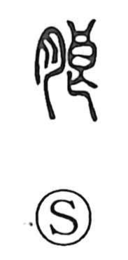

朗

Uncategorized
Kun: akarui, hogaraka | On: rou
bright ・ clear ・ cheerful ・ sonorous
Explanation
A phono-semantic compound: in the original form 朗, the element 良 functions as the phonetic, giving the on reading rō, while 月 is the moon, pointing to the character’s earliest sense—the clear brightness of moonlight. The Shuowen records the form 朖 and glosses it with 明 “clear.” From this luminous origin the meaning broadened to describe a cheerful, open disposition and, by extension, a clear, carrying (loud) voice.